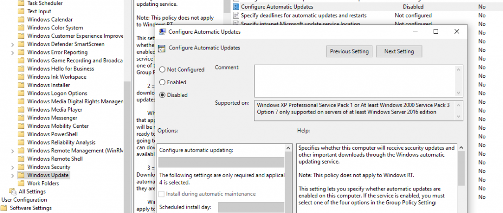

Creating a malware analysis lab
Installing Virtualization Software
Before installing a virtual operating system, we need to install one of the virtualization software that enables this.
While there are some differences between them, any of the virtualization software will help us for our dynamic analysis. You can install one of the following virtualization software:
- VMware Workstation
- VMware Fusion (for macOS)
- Oracle Virtualbox
We will use VMware Workstation virtualization software during the training and it is recommended for you to install it so that you can follow the training easily.
You can download and install VMware Workstation here.
Installing Operating System
After installing the virtualization software on our system, let’s set up our operating system with the help of these virtualization software.
In order to install the operating system together with the virtualization software, we need to obtain the ISO files of the operating systems. You can use the application called MediaCreationTool published by Microsoft to create an ISO file for the Windows operating system.
Malware may be programmed not to work or to behave differently depending on the operating system. For this reason, we strongly recommend that you have different operating systems at hand.
When you run MediaCreationTool, you will be prompted with “Upgrade this PC now” and “Create installation media” options. Let’s continue by selecting the “Create installation media” option.

Then we are asked to choose Language, operating system version information and operating system architecture. From here you can choose the Windows 10 64bit option. We recommend you to choose the operating system with 64bit architecture first. You can run both 32-bit applications and 64-bit applications on operating systems with 64-bit architecture, but you can only run 32-bit applications on operating systems with 32-bit architecture.
After choosing the operating system version information and architecture, we are asked whether we want to write to the USB drive or create an ISO file. Since we need the ISO file, we choose the ISO option here.
Then we are asked in which directory we want the ISO file to be saved. You may choose an appropriate directory for you.
When you complete these steps, the ISO file will be saved in the directory you specified. (This step may take a long time.)
Now that we have the ISO file, we can proceed to the installation of the operating system. Since VMware Workstation will be used in this training series, the lecture will be through this software. However, If you wish to use another virtualization software you should be able to adapt the lecture for other virtualization software easily since all these software are very similar.
Since we are going to install a new operating system, we must first click on the “Create a New Virtual Machine” button. Alternatively, you can select “File” from the top menu and then “New Virtual Machine”.
Then, we are asked to choose what kind of installation we want to proceed with. We continue our installation by choosing “Typical (recommended)”.
We select the ISO file that we have downloaded by selecting the “Installer disc image file (iso)” option.
Next, we are asked to name the Virtual Machine and specify the directory that we want the files of the VM to be kept. You can use “Windows10 Dynamic Analysis” as the name and “the default directory” as the directory. We recommend giving it a descriptive name to your VM so that you won’t confuse your VMs if you have multiple. If you wish you can change this name you have given to the VM later.
After choosing the name and the directory where the VM’s files will be kept, we are asked to determine the disk size of our operating system. Since we will install various software and applications in it, we recommend that you allocate a minimum of 60-70 GB.
Finally, we are presented with some hardware settings that the operating system uses. At this stage, we go to the customization step by clicking the “Customize Hardware” button.
Since we are using an operating system with a 64-bit architecture, I recommend reserving a minimum of 4 GB of RAM. If you assign lower settings you may end up with performance and operating system errors. However, if you are installing an operating system with a 32-bit architecture, then you may allocate less RAM.
After we pass this stage, a Virtual Machine with the settings we specified is being created.
After the VM is created, you can install the operating system normally by running the created VM.
Installing Tools and Software
At this point, our operating system is now ready for use. Next is the installation of tools and software that we will use during dynamic analysis.
You should install the tools we mentioned in our Malware Analysis Tools article on your virtual operating system now.
Tweaking Virtual Machine
We need to make some configuration changes on our Virtual Machine to be able to use it for malware analysis.
1. Turn off anti-malware solutions
Since we will analyze malware on our VM, we do not want antivirus software to delete the malware we have installed for analysis. We should turn off Windows Defender which comes active by default in Windows operating systems.
You should go to Windows Defender settings and disable all active settings. The feature that instantly scans and deletes the malware you have installed to analyze is “Real-time protection”. Make sure you turn this feature off.
Disable Windows Defender Using Group Policy
You can open the Local Group Policy Editor application by searching for “edit group policy” in the start menu. Alternatively, you can access the Local Group Policy Editor application by searching for “gpedit.msc” or by running it through “Search>Run” function on Windows.
To disable Windows Defender using the Local Group Policy Editor application, you must access the policy below.
“Computer Configuration > Administrative Templates > Windows Components > Microsoft Defender Antivirus”
Here, you should double-click the “Turn off Microsoft Defender Antivirus” policy and set it to “Enabled”.
You should also disable the “Monitor file and program activity on your computer” policy under “Real-time Protection”.
2. Rename your virtual operating system
Some malicious software makes various checks in order not to work in analysis environments. One of these checks is to check the hostname. Since most sandboxes have hostnames such as “Sandbox”, “Malware”, “Cuckoo” …, malware is programmed not to run on systems with these hostnames.
You should make your VM look like a normal user’s system as much as possible so that you can avoid anti-analysis techniques. Specifying a random name as the hostname will allow you to help avoid such checks.
To change the device name, you must select “Settings → System → About” and then click the “Rename this PC” button.
Don’t forget to change your username too!
3. Turn off auto updates
The malware we are going to analyze may be taking advantage of vulnerabilities in the operating system. In order for the malware to run as normally as possible, we need to turn off the automatic updates of our virtual operating system.
You can turn off automatic updates through the group policy settings.
You can open the Local Group Policy Editor application by searching for “edit group policy” in the start menu. Alternatively, you can access the Local Group Policy Editor application by searching for “gpedit.msc” or by running it through the “Search>Run” function on Windows.
You should then access the policy below.
“Computer Configuration > Administrative Templates > Windows Components > Windows Update”
After accessing the relevant policy, you should set the policy named “Configure Automatic Updates” to “Disabled”.

4. Disable Hidden Extensions
You may have seen the attackers try to trick their victims by changing the file extensions. How could they do this?
Windows operating systems are set to hide known file extensions by default. In other words, a file named “Chrome.exe” will appear as “Chrome” by default. Attackers name their malicious software as “Photo.jpg.exe”, causing the user to see the file as “Photo.jpg”. When the user thinks that this file is an image file and opens it, the malware will start to run.
In order not to get confused with this during our analysis, we need to fix it so that the extensions that are hidden by default are always shown.
For this, we need to open the application named “File Explorer” and access the settings menu by clicking the “File” and then “Change folder and search options” buttons from the top menu.
Then you should save the settings by unchecking “Hide extensions for known file types” from the “View” tab.
5. Show Hidden Files and Folders
Malware aims to prevent the user from detecting their files by hiding them. By default, showing hidden files and directories will enable us to perform a more comfortable analysis.
Let’s open the application called File Explorer and open the settings menu with the help of “File” from the top menu, then click “Change folder and search options”.
Then, let’s check the “Show hidden files, folders, and drives” from the “View” tab and save the setting.
6. Disable ASLR
New versions of Windows have an anti-exploit security mechanism called ASLR (Address Space Layout Randomization). We won’t get into ASLR too much in this training, but you may want to disable this feature at this stage as it will come up in the future.
You can disable this setting with the help of Registry. Access the following registry by opening the Registry Editor application.
`HKEY_LOCAL_MACHINE\SYSTEM\CurrentControlSet\Control\Session Manager\Memory Management
Then create a REG_DWORD type key named MoveImages.
These settings will eventually disable the ASLR feature.
7. Disable Windows Firewall
As we implemented in the previous steps, we should disable the Windows Firewall to prevent the security mechanisms from interfering with the malicious software we analyze.
Access Windows Defender Firewall settings via the control panel. You can access these settings using the search bar in the top menu of File Explorer. If you copy and search the following path in this search bar, it will take you to the Windows Defender Firewall settings.
“Control Panel\System and Security\Windows Defender Firewall\Customize Settings”
After accessing the Defender Firewall settings, select “Turn off Windows Defender Firewall” and save it. This will disable the Firewall.
8. Mimic an End-User System
You should make your VM look like a normal end-user operating system as much as possible so that the malware you are analyzing is not caught by anti-analysis techniques.
Since there are no precise instructions or settings for this, it’s totally up to you to make your analysis VM look like a normal end-user’s computer. We can recommend the following tips to implement on your VM to establish this similarity:
- Installing browsers frequently preferred by end-users such as Chrome and Firefox,
- Leaving files in different directories that will be of interest to the attacker,
- Changing the desktop background,
- To ensure that some files are found in the Downloads directory by downloading small applications through the browser
9. Change Network Settings
We need to prevent our malware from spreading to different devices via network connection. Thanks to the private networks provided by virtualization software, we can prevent malware from infecting different devices.
For this, you must click on the “VM” menu in the top menu of VMware Workstation and select “Settings”.
You should select the “Custom” setting by selecting “Network Adapter” from the left menu in the window that opens.
Take a Snapshot
Your operating system may be affected functionally or become unusable after you analyze malware or ransomware on your system. When you want to analyze a new malware after running and analyzing another malware, you do not want your operating system to get affected by the changes that was made by the old malware you analyzed.
In such cases, you can take advantage of the Snapshot feature of virtualization software.
Snapshot is a feature that allows you to take a snapshot of your Virtual Machine and return to this backup later.
Our VM has been configured for malware analysis and the applications that we will be using in the analysis have been installed into it. At this stage, you can take a Snapshot and then switch to the same analysis environment with your clean VM.
To take snapshots, you can access the screen where you manage Snapshots by clicking the “VM” menu in the top menu of the VMware Workstation application and clicking “Snapshot” → “Snapshot Manager”.
Then you can take a snapshot of your VM by clicking the “Take Snapshot” button. That’s how easy it is to take snapshots.
Entering detailed information on the description will allow you to easily find the Snapshot you need. For this reason, we recommend that you enter as descriptive comments as possible.